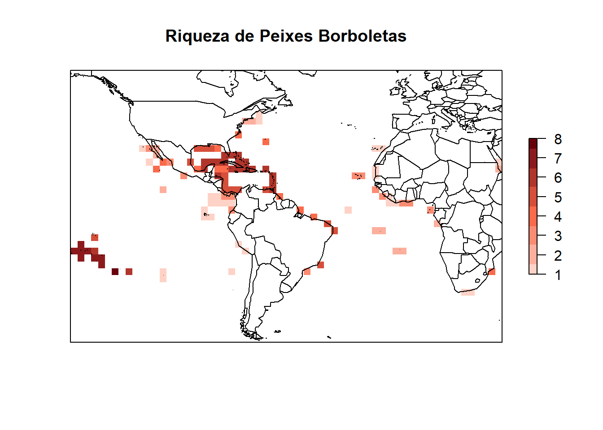

Para realizarmos esta pratica, você precisará instalar alguns pacotes. Utilize o código abaixo para instalar os pacotes devtools, maptools e letsR. Pode ser que demore um pouco, mas se vocês tiver uma conexão internet o R vai baixar e instalar todo o necessário. Copie e cole os seguintes códigos em no script ou terminal.
#
# # instalando pacotes
# install.packages("devtools")
# install.packages("rgdal")
# install.packages("maptools")
# install.packages("maps")
# library(devtools)
# install_github("macroecology/letsR", dependencies = T)
# # install.packages('letsR')#o pacote do repositorio Git é o
# # mais atual
# carregando pacotes usados
library(letsR)
library(maptools)
library(maps)
library(rgdal)Muitos são os repositórios de dados espaciais. Dados geográficos para os organismos mais comumente acessados (e.g., mamíferos, anuros, etc) estão disponíveis no seguinte link: http://www.iucnredlist.org/technical-documents/spatial-data. Verifique as possibilidades disponíveis.
Nós utilizaremos aqui os dados de peixes borboletas (Chaetodontidae) do Novo Mundo pois são poucas as espécies e os dados são leves o suficientes para uma aula prática rápida. Se quiser testar algo mais real, tente baixar os dados de mamíferos (cerca de 350Mb!) em casa e utilizá-lo no lugar dos peixes Mas antes, tenha certeza que teu computador é potente o suficiente para tratar tamanho volume de dados, pois você poderá perder algumas horas (ou até dias) para executar os exercícios descritos abaixo.
Inicialmente, precisamos criar uma pasta no diretório de trabalho que receberá o arquivo depois de terminado o download. Para criar a pasta, fazer o download do arquivo, descomprimir e finalmente carrega-lo no R será preciso executar os seguintes códigos.
# criar pasta
dir.create(file.path(getwd(), "/data"))Em seguida, defininos o link para download dos dados (de acordo com o endereço registrado no site da IUCN), extraímos o arquivo zip e carregamos o arquivo .shp para o R.
# URL <- "http://bit.ly/1HSxNlK" # dados IUCN cecilias
# download.file(URL, destfile = "data/GYMNOPHIONA.zip")
# unzip("data/GYMNOPHIONA.zip", exdir = "data/")
# se quiser outros dados, é só mudar o link e o nome do
# arquivo URL <- 'http://bit.ly/1JTrFLL'#dadosIUCN
# Anura(~300Mb)
# download.file(URL,destfile='data/anura.zip')
# unzip('data/anura.zip',exdir = 'data/')
# rm(URL) #remove o link da área de trabalhoAgora, verifique se os dados de cecílias estão exatamente dentro da pasta /data que acabamos de criar. Se tudo estiver correto, você deverá ver pelo menos oito arquivos com o mesmo nome, porém extensões diferentes (.shp, .shx, .prj, etc). Se quiser saber mais sobre isso, você precisa procurar e ler sobre Sistema de Informação Geográficas (SIG ou GIS em inglês) e Cartografia. Muito do que é feito em Macroecologia é baseado em dados tipo SIG. Se puder, aprenda estas ferramentas de SIG pois este é um campo em franco desenvolvimento.
Para importar os dados e ver o que tem dentro deles, faça:
# Importanto o shapefile
borb <- rgdal::readOGR(dsn = "data/Chaetodontidae_NewWorld.shp")## OGR data source with driver: ESRI Shapefile
## Source: "/Users/cesarcordeiro/git/macroecologia-UENF_2022/data/Chaetodontidae_NewWorld.shp", layer: "Chaetodontidae_NewWorld"
## with 29 features
## It has 27 fields
## Integer64 fields read as strings: id_no# visualizando o conteúdo dos dados
head(borb@data)## id_no binomial presence origin seasonal compiler yrcompiled
## 0 165627 Prognathodes aculeatus 1 1 1 IUCN 2010
## 1 4364 Chaetodon robustus 1 1 1 IUCN 2010
## 2 165688 Chaetodon flavirostris 1 1 1 IUCN 2010
## 3 4363 Prognathodes obliquus 1 1 1 IUCN 2010
## 4 165646 Prognathodes guyanensis 1 1 1 IUCN 2010
## 5 165621 Prognathodes aya 1 1 1 IUCN 2010
## citation source dist_comm island subspecies
## 0 International Union for Conservation of Nature (IUCN) <NA> <NA> <NA> <NA>
## 1 International Union for Conservation of Nature (IUCN) <NA> <NA> <NA> <NA>
## 2 International Union for Conservation of Nature (IUCN) <NA> <NA> <NA> <NA>
## 3 International Union for Conservation of Nature (IUCN) <NA> <NA> <NA> <NA>
## 4 International Union for Conservation of Nature (IUCN) <NA> <NA> <NA> <NA>
## 5 International Union for Conservation of Nature (IUCN) <NA> <NA> <NA> <NA>
## subpop legend tax_comm kingdom phylum class order_
## 0 <NA> Extant (resident) <NA> ANIMALIA CHORDATA ACTINOPTERYGII PERCIFORMES
## 1 <NA> Extant (resident) <NA> ANIMALIA CHORDATA ACTINOPTERYGII PERCIFORMES
## 2 <NA> Extant (resident) <NA> ANIMALIA CHORDATA ACTINOPTERYGII PERCIFORMES
## 3 <NA> Extant (resident) <NA> ANIMALIA CHORDATA ACTINOPTERYGII PERCIFORMES
## 4 <NA> Extant (resident) <NA> ANIMALIA CHORDATA ACTINOPTERYGII PERCIFORMES
## 5 <NA> Extant (resident) <NA> ANIMALIA CHORDATA ACTINOPTERYGII PERCIFORMES
## family genus category marine terrestial freshwater SHAPE_Leng SHAPE_Area
## 0 CHAETODONTIDAE Prognathodes LC True False False 555.777854 221.512669
## 1 CHAETODONTIDAE Chaetodon LC True False False 191.209637 70.240590
## 2 CHAETODONTIDAE Chaetodon LC True False False 676.173219 327.189811
## 3 CHAETODONTIDAE Prognathodes DD True False False 5.579774 2.477472
## 4 CHAETODONTIDAE Prognathodes LC True False False 623.898171 213.882545
## 5 CHAETODONTIDAE Prognathodes LC True False False 283.786494 74.748053Este último comando te permitirá ver tudo todos os descritores (i.e., colunas) dentro do arquivo .shp. Agora precisaremos fazer uma mapa para visualizar o que há dentro deste objeto borb que acabamos de criar. Utilizaremos algumas linhas de código a mais para fazer um mapa colorido para melhorar a compreensão dos dados. Utilizaremos a coluna referente ao nome científico de cada uma das espécies (i.e. binomial) para criar cores aleatórias e utilizá-las no nosso mapa. O parâmetro alfa dentro da função rainbow faz referência ao nível de transparência de cada cor; assim, poderemos ver polígonos mesmo que eles estejam cobertos por outros polígonos.
## usando cores aleatórias nos nossos mapas
colors <- rainbow(borb@data$binomial %>%
unique() %>%
length(), alpha = 0.5)
position <- match(borb@data$binomial, unique(borb@data$binomial))
colors <- colors[position]
## Plot call
map("world", xlim = c(-150, 40))
box()
plot(borb, col = colors, lty = 0, add = T)Cada cor se refere à um polígono da área de distribuição de cada espécie.
A manipulação e tratamento de dados espaciais tipo .shp exigem um
profundo conhecimento sobre os dados e a forma como eles são
armazenados. Se quiserem saber mais sobre como utilizar o R para tratar
este tipo de dados, recorram a livros como Applied spatial data
analysis with R (Bivand et al. 2013) ou An introduction to R
for spatial analysis and mapping (Brunsdown & Comber 2015).
Felizmente, existe um pacote chamado letsR (Vilela &
Villalobos 2015) que possui uma grande variedade de ferramentas úteis
para macroecólogos. Nós já instalamos e carregamos este pacote no início
da aula e podemos utilizar suas funções para fazer mais alguns
mapas.
Vamos utilizar a função lets.presab para criar um raster (i.e., arquivo tipo imagem que armazena informações em cada um de seus pixels; digite ‘arquivo raster’ no Google para mais detalhes) sumarizando a riqueza de espécie de peixes borboletas na América do Sul. Neste caso, a resolução do nosso arquivo de raster será de 3x3 graus (i.e., cada pixel ou célula tem tamanho 3 por 3 graus); mude a resol para valores 4 ou 5 e você verá a diferença na figura final. Já o argumento cover garante que somente pixels que tenham mais de 1% de sua área sobre do continente seja mantido (mude estes valores e veja a diferença no mapa resultante). Como nosso objetivo é uma mapa da América, as coordenadas limites foram definidas para realizar o exercício somente ao longo da extensão desejada (argumentos xmn, xmx, ymn e ymx da função lets.presab).
borb_maps <- lets.presab(borb, resol = 3,
xmn = -150, xmx = 40, # America range
ymn = -38, ymx = 45, # America range
cover = 0.01)
plot(borb_maps, axes = F, main = "Riqueza de Peixes Borboletas")
Aproveite e use o seguinte código para ver o que há no objeto criado pela função.
# see what we have
summary(borb_maps)##
## Class: PresenceAbsence
## _ _
## Number of species: 29
## Number of cells: 110
## Cells with presence: 110
## Cells without presence: 0
## Species without presence: 0
## Species with the largest range: Chaetodon ocellatus
## _ _
## Grid parameters
## Resolution: 3, 3 (x, y)
## Extention: -150, 39, -39, 45 (xmin, xmax, ymin, ymax)
## Coord. Ref.: +proj=longlat +datum=WGS84 +no_defsstr(borb_maps)## List of 3
## $ Presence_and_Absence_Matrix: num [1:110, 1:31] -67.5 -73.5 -70.5 -67.5 -76.5 ...
## ..- attr(*, "dimnames")=List of 2
## .. ..$ : NULL
## .. ..$ : chr [1:31] "Longitude(x)" "Latitude(y)" "Amphichaetodon melbae" "Chaetodon auriga" ...
## $ Richness_Raster :Formal class 'RasterLayer' [package "raster"] with 12 slots
## .. ..@ file :Formal class '.RasterFile' [package "raster"] with 13 slots
## .. .. .. ..@ name : chr ""
## .. .. .. ..@ datanotation: chr "FLT4S"
## .. .. .. ..@ byteorder : chr "little"
## .. .. .. ..@ nodatavalue : num -Inf
## .. .. .. ..@ NAchanged : logi FALSE
## .. .. .. ..@ nbands : int 1
## .. .. .. ..@ bandorder : chr "BIL"
## .. .. .. ..@ offset : int 0
## .. .. .. ..@ toptobottom : logi TRUE
## .. .. .. ..@ blockrows : int 0
## .. .. .. ..@ blockcols : int 0
## .. .. .. ..@ driver : chr ""
## .. .. .. ..@ open : logi FALSE
## .. ..@ data :Formal class '.SingleLayerData' [package "raster"] with 13 slots
## .. .. .. ..@ values : num [1:1764] 0 0 0 0 0 0 0 0 0 0 ...
## .. .. .. ..@ offset : num 0
## .. .. .. ..@ gain : num 1
## .. .. .. ..@ inmemory : logi TRUE
## .. .. .. ..@ fromdisk : logi FALSE
## .. .. .. ..@ isfactor : logi FALSE
## .. .. .. ..@ attributes: list()
## .. .. .. ..@ haveminmax: logi TRUE
## .. .. .. ..@ min : num 0
## .. .. .. ..@ max : num 8
## .. .. .. ..@ band : int 1
## .. .. .. ..@ unit : chr ""
## .. .. .. ..@ names : chr ""
## .. ..@ legend :Formal class '.RasterLegend' [package "raster"] with 5 slots
## .. .. .. ..@ type : chr(0)
## .. .. .. ..@ values : logi(0)
## .. .. .. ..@ color : logi(0)
## .. .. .. ..@ names : logi(0)
## .. .. .. ..@ colortable: logi(0)
## .. ..@ title : chr(0)
## .. ..@ extent :Formal class 'Extent' [package "raster"] with 4 slots
## .. .. .. ..@ xmin: num -150
## .. .. .. ..@ xmax: num 39
## .. .. .. ..@ ymin: num -39
## .. .. .. ..@ ymax: num 45
## .. ..@ rotated : logi FALSE
## .. ..@ rotation:Formal class '.Rotation' [package "raster"] with 2 slots
## .. .. .. ..@ geotrans: num(0)
## .. .. .. ..@ transfun:function ()
## .. ..@ ncols : int 63
## .. ..@ nrows : int 28
## .. ..@ crs :Formal class 'CRS' [package "sp"] with 1 slot
## .. .. .. ..@ projargs: chr "+proj=longlat +datum=WGS84 +no_defs"
## .. .. .. ..$ comment: chr "GEOGCRS[\"unknown\",\n DATUM[\"World Geodetic System 1984\",\n ELLIPSOID[\"WGS 84\",6378137,298.25722"| __truncated__
## .. ..@ history : list()
## .. ..@ z : list()
## $ Species_name : chr [1:29] "Amphichaetodon melbae" "Chaetodon auriga" "Chaetodon capistratus" "Chaetodon flavirostris" ...
## - attr(*, "class")= chr "PresenceAbsence"E se precisarmos criar somente uma matrix para saber qual espécie
ocorre em cada uma das células do raster, você pode acessar a matriz
direto do objeto borb_maps ou refazer a mesma funçao pedindo como
resultado somente a matrix de presença/ausência (show.matrix =
TRUE dentro da função lets.presab; digite
?lets.presab no console do R e leia o help desta função e
seus argumentos).
# Presence/absence matrix
borb_pa <- borb_maps$Presence_and_Absence_Matrix
dim(borb_pa)## [1] 110 31# species names
colnames(borb_pa)## [1] "Longitude(x)" "Latitude(y)"
## [3] "Amphichaetodon melbae" "Chaetodon auriga"
## [5] "Chaetodon capistratus" "Chaetodon flavirostris"
## [7] "Chaetodon hoefleri" "Chaetodon humeralis"
## [9] "Chaetodon litus" "Chaetodon lunula"
## [11] "Chaetodon mertensii" "Chaetodon meyeri"
## [13] "Chaetodon ocellatus" "Chaetodon pelewensis"
## [15] "Chaetodon robustus" "Chaetodon sanctaehelenae"
## [17] "Chaetodon sedentarius" "Chaetodon striatus"
## [19] "Chaetodon unimaculatus" "Forcipiger flavissimus"
## [21] "Hemitaurichthys multispinosus" "Johnrandallia nigrirostris"
## [23] "Prognathodes aculeatus" "Prognathodes aya"
## [25] "Prognathodes brasiliensis" "Prognathodes carlhubbsi"
## [27] "Prognathodes dichrous" "Prognathodes falcifer"
## [29] "Prognathodes guyanensis" "Prognathodes marcellae"
## [31] "Prognathodes obliquus"# presence/absence matrix
borb_pa[1:5, 1:5]## Longitude(x) Latitude(y) Amphichaetodon melbae Chaetodon auriga Chaetodon capistratus
## [1,] -67.5 43.5 0 0 0
## [2,] -73.5 40.5 0 0 1
## [3,] -70.5 40.5 0 0 1
## [4,] -67.5 40.5 0 0 0
## [5,] -76.5 34.5 0 0 1# Position of cells
plot(borb_pa[, 1:2], asp = 1)# species occurence
n <- dim(borb_pa)[2]
occ <- colSums(borb_pa[, c(3:n)])
occ## Amphichaetodon melbae Chaetodon auriga Chaetodon capistratus
## 1 17 37
## Chaetodon flavirostris Chaetodon hoefleri Chaetodon humeralis
## 10 12 11
## Chaetodon litus Chaetodon lunula Chaetodon mertensii
## 2 13 10
## Chaetodon meyeri Chaetodon ocellatus Chaetodon pelewensis
## 3 45 12
## Chaetodon robustus Chaetodon sanctaehelenae Chaetodon sedentarius
## 8 7 41
## Chaetodon striatus Chaetodon unimaculatus Forcipiger flavissimus
## 41 12 22
## Hemitaurichthys multispinosus Johnrandallia nigrirostris Prognathodes aculeatus
## 1 10 26
## Prognathodes aya Prognathodes brasiliensis Prognathodes carlhubbsi
## 9 3 8
## Prognathodes dichrous Prognathodes falcifer Prognathodes guyanensis
## 4 6 22
## Prognathodes marcellae Prognathodes obliquus
## 7 1par(mfrow = c(1,2))
hist(occ, main = "Ocorrências por pixel", las=1)
hist(log(occ + 1), main = "Ocorrências por pixel (log)", las=1)Se quisermos calcular a área de distribuição de cada uma das espécies, é só utilizar a seguinte função. Porém, como ela retorna o valor em m2, precisamos converser em km2 dividindo por 1000000 (1000m x 1000m).
# range size in m2
range_gym <- lets.rangesize(borb_maps, units = "squaremeter")
# transformar m2 para km2
range_gym <- range_gym/1e+06
range_gym## Range_size
## Amphichaetodon melbae 100237.4
## Chaetodon auriga 1749686.9
## Chaetodon capistratus 3785910.7
## Chaetodon flavirostris 1043620.3
## Chaetodon hoefleri 1279911.0
## Chaetodon humeralis 1151630.4
## Chaetodon litus 197887.7
## Chaetodon lunula 1359184.2
## Chaetodon mertensii 1049724.0
## Chaetodon meyeri 315582.8
## Chaetodon ocellatus 4605736.0
## Chaetodon pelewensis 1258946.8
## Chaetodon robustus 873681.7
## Chaetodon sanctaehelenae 763217.9
## Chaetodon sedentarius 4279333.0
## Chaetodon striatus 4276218.5
## Chaetodon unimaculatus 1258946.8
## Forcipiger flavissimus 2319288.1
## Hemitaurichthys multispinosus 100237.4
## Johnrandallia nigrirostris 1050816.9
## Prognathodes aculeatus 2717909.7
## Prognathodes aya 897112.2
## Prognathodes brasiliensis 322884.1
## Prognathodes carlhubbsi 883104.5
## Prognathodes dichrous 432423.5
## Prognathodes falcifer 605228.6
## Prognathodes guyanensis 2317602.3
## Prognathodes marcellae 763219.8
## Prognathodes obliquus 110757.8Autores: Murilo S. Dias, Juan P. Quimbayo, Thiago Mendes, Mariana Bender, Augusto Flores. Adaptado por: Cesar Cordeiro